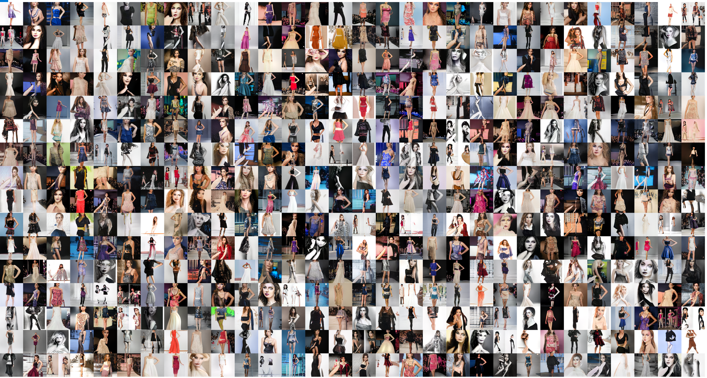

I am a Data Scientist and ML/DL engineer experienced in several hands-on projects
in various fields such as image processing, NLP(text classification, text summarization, Q&A), audio processing,
speech sythesis, and time series. Here you can get familiar with some of my projects.

Finetune BERT using Transformers for multiclass text classification on website content data. The code applies Tensorflow 2 and run on colab.

This projects introduces how to collect images from Openimages for your custom data and train YOLOv5 on it. In this case, Hand gun, Shot gun, and Knife images were collected and trained with YOLOv5 Pytorch.

Train StyleGAN 2 ADA on fashion data to generate synthesised fashion images. The data of fashion images were collected from flickr and trained the model using Pytorch. The model was trained only for 3200 kimg.
Train H2O AutoML on timeseries data from Kaggle to predict energy consumption. This is a baseline code for beginners but overperforms most of the other models on Kaggle.